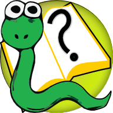

Просмотр
словарь
следующий
|
Учимся с Python
»
Мыслить как программист. Учимся с Python
¶

Мыслить как программист. Учимся с Python
¶
2-е издание (версия Python 2.х)
Джеффри Элкнер, Аллен Б. Дауни, Крис Мейерс и Андрей Трофимов
О правах на эту книгу
Предисловие Дэвида Бизли
Предисловие Джеффри Элкнера
Предисловие к русскому изданию
Благодарности
Глава 1
Путь программирования
Глава 2
Переменные, выражения и предложения
Глава 3
Функции
Глава 4
Условные предложения
Глава 5
Функции, возвращающие значения
Глава 6
Итерации
Глава 7
Строки
Глава 8
Списки
Глава 9
Модули и файлы
Глава 10
Рекурсия и исключения
Глава 11
Словари
Глава 12
Классы и объекты
Глава 13
Методы
Глава 14
Коллекции объектов
Глава 15
Наследование
Глава 16
Связные списки
Глава 17
Стеки
Глава 18
Очереди
Глава 19
Деревья
Приложение A
Как научить Python русскому языку
Приложение B
Отладка программ
Приложение C
Что дальше?
GNU Free Document License
Поиск
Просмотр
словарь
следующий
|
Учимся с Python
»